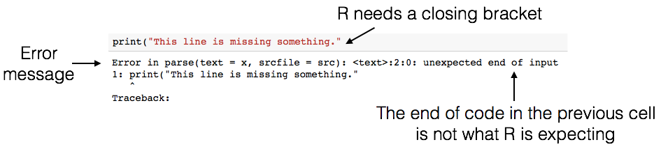
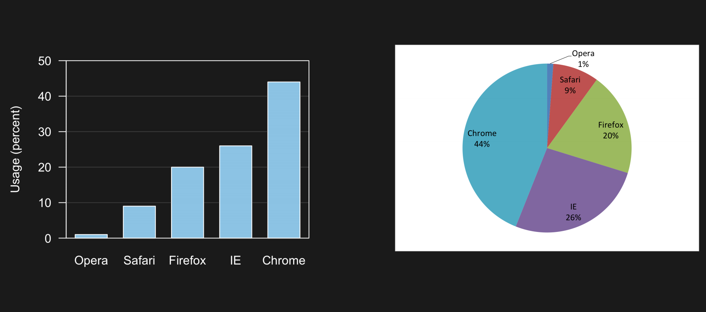

print("Hi Sky!")[1] "Hi Sky!"Photos/Images by #WOCinTech/#WOCinTech Chat (CC-BY)
Thank you to our sponsors!

The main motivation for the development of this camp is to promote and uplift women and gender minorities in data science. The leaky pipeline is a phrase describing the phenomenon that even though women are interested in careers in STEM fields (including data science), they are disproportionately lost along the way as the level of their education and careers progresses. My hope is that camps like this one help to encourage and empower women to pursue careers in STEM fields, while exposing them to new and exciting topics in data science.
In small groups of 3–4, take turns answering the following questions to get to know each other: 1. What’s your favorite school subject and why do you like it?
2. Where is one place you’ve always wanted to visit and what would you do there? 3. What’s one thing everyone in your group has in common that isn’t obvious?

This webpage is called a Jupyter notebook. A notebook is a place to write computer code for analysis, view the results of the analysis, as well as to narrate the analysis with rich formatted text…
In a notebook, each rectangle containing text or code is called a cell.
Text cells (like this one) can be edited by double-clicking on them. They’re written in a simple format called Markdown to add formatting and section headings. For more practice using Markdown, try this online tutorial!
After you edit a text cell, click the “run cell” button at the top that looks like ▶ to confirm any changes. (Try not to delete the instructions of the lab.)
Other cells contain code in the R language. Running a code cell will execute all of the code it contains.
To run the code in a cell, first click on that cell to activate it. It will be highlighted with a blue rectangle to the left of it when activated. Next, either press Run ▶ or hold down the shift key and press return or enter. print(“Hello, World!”) Try running the next cell:
print("Hi Sky!")[1] "Hi Sky!"The above code cell contains a single line of code, but cells can also contain multiple lines of code. When you run a cell, the lines of code are executed in the order in which they appear. Every print expression prints a line. Run the next cell and notice the order of the output.
Note to self bla bla bla…
print("First this line is printed,")
print("and then this one.")[1] "First this line is printed,"
[1] "and then this one."You can use Jupyter notebooks for your own projects or documents. When you make your own notebook, you’ll need to create your own cells for text and code.
To add a cell, click the + button in the menu bar of this tab. The newly created cell will start out as a code cell. You can change it to a text cell by clicking inside it so it’s highlighted, clicking the drop-down box next to the restart and run all button (⏩) in the menu bar of this tab, and changing it from “Code” to “Markdown”.
Add a code cell below this one. Write code in it that prints out:
My name is ____!Run your cell to verify that it works.
Next, add a text/Markdown cell and write the text “My name is ____!” in it.
R is a language, and like natural human languages, it has rules. It differs from natural language in two important ways: 1. The rules are simple. You can learn most of them in a few weeks and gain reasonable proficiency with the language in a semester. 2. The rules are rigid. If you’re proficient in a natural language, you can understand a non-proficient speaker, glossing over small mistakes. A computer running R code is not smart enough to do that.
Whenever you write code, you’ll make mistakes (everyone who writes code does, even your course instructor!). When you run a code cell that has errors, R will sometimes produce error messages to tell you what you did wrong.
Errors are totally okay; even experienced programmers make many errors. It’s a natural part of the coding process. When you make an error, you just have to find the source of the problem, fix it, and move on.
We have made an error in the next cell. Remove the # symbol below (i.e., uncomment the line), and then run the cell to see what happens.
print("This line is missing something.")[1] "This line is missing something."
There’s a lot of terminology in programming languages, but you don’t need to know it all in order to program effectively. Even though the error message can seem cryptic, if you read it carefully you’ll often find hints as to what went wrong. For example, above, you’ll see the message unexpected end of input (among a lot of other technical jargon). In other words, R reached the end of the line of code, and wasn’t expecting to reach the end – it thinks there is still something missing!
Of course, even if you do your best to interpret the error message, sometimes you may get stuck figuring out what went wrong and how to fix it. In that case, ask someone.
Try to fix the code above so that you can run the cell and see the intended message instead of an error.
Its important to save your work often so you don’t lose your progress! At the top of the screen, go to the File menu then Save Notebook. Also, there are keyboard shorcuts for saving your work too: control + s on Windows, or command + s on Mac. Once you’ve saved your work, you will see a message at the bottom of the screen that says Saving completed.
Quantitative information arises everywhere in data science. In addition to representing commands to print out lines, our R code can represent numbers and methods of combining numbers. The expression 3.2500 evaluates to the number 3.25. (Run the cell and see.)
3.2500Notice that we didn’t have to write print(). When you run a notebook cell, Jupyter helpfully prints out that value for you.
2
3
4Above, you should see that the three numbers (2, 3, and 4) are printed out. In R, simply inputting numbers and running the cell will generate all the numbers that you listed.
The line in the next cell performs some mathemtical operations. Run them!
2.0 - 1.5 + 452 * 26/2log(2)Many basic arithmetic operations are built in to R. This webpage describes many arithmetic operators that might be useful in this camp.
In natural language, we have terminology that lets us quickly reference very complicated concepts. We don’t say, “That’s a large mammal with brown fur and sharp teeth!” Instead, we just say, “Bear!”
Similarly, an effective strategy for writing code is to define names for data as we compute it, like a lawyer would define terms for complex ideas at the start of a legal document to simplify the rest of the writing.
In R, we do this with objects. An object has a name on the left side of an <- sign and an expression to be evaluated on the right.
answer <- 3*2 + 4
answerWhen you run that cell, R first evaluates the first line. It computes the value of the expression 3 * 2 + 4, which is the number 10. Then it gives that value the name answer. At that point, the code in the cell is done running.
After you run that cell, the value 10 is bound to the name answer:
answerNote: You can also use an
=sign for assignment
When naming objects in R there are some rules: 1. Names in R can have letters (upper- and lower-case letters are both okay and count as different letters e.g. “Answer” and “answer” will be treated as different objects), underscores, dots, and numbers. 2. The first character can’t be a number (otherwise a name might look like a number).
3. Names can’t contain spaces, since spaces are used to separate pieces of code from each other.
Other than those rules, what you name something doesn’t matter to R. For example, the next cell does the same thing as the above cell, except everything has a different name:
a <- 3
b <- 2 * a + 4
bAnother common pattern is that a series of lines in a single cell will build up a complex computation in stages, naming the intermediate results.
However, names are very important for making your code readable to yourself and others. The cell above is shorter, but it’s totally useless without an explanation of what it does.
There is also cultural style associated with different programming languages. In the modern R style, object names should use only lowercase letters, numbers, and _. Underscores (_) are typically used to separate words within a name (e.g., answer_one).
Question: How old will you be in 2050?
age which is your age now.years).future_age which adds together age and years to get your age in 2050.age <- 16
years <- 2050-2025
future_age <- age + years
future_ageThe most common way to combine or manipulate values in R is by calling functions. R comes with many built-in functions that perform common operations.
We used a function print() at the beginning of this notebook when we printed text from a code cell. Here we’ll demonstrate using another function toupper() that converts text to uppercase:
greeting <- toupper("Why, hello there!")
greetingTry using the function tolower now!
tolower(greeting)Some functions take multiple arguments, separated by commas. For example, the built-in max function returns the maximum argument passed to it.
biggest <- max(4,7,23,1,5)
biggestTry to use the min function now to find the smallest number!
R has many built-in functions, but we can also use functions that are stored within packages created by other R users. We are going to use a package, called tidyverse, to load, modify and plot data. This package has already been installed for you. Later in the course you will learn how to install packages so you are free to bring in other tools as you need them for your data analysis.
To use the functions from a package you first need to load it using the library function. This needs to be done once per notebook (and a good rule of thumb is to do this at the very top of your notebook so it is easy to see what packages your R code depends on).
library(tidyverse)── Attaching core tidyverse packages ──────────────────────── tidyverse 2.0.0 ──
✔ dplyr 1.1.4 ✔ readr 2.1.5
✔ forcats 1.0.1 ✔ stringr 1.5.2
✔ ggplot2 4.0.0 ✔ tibble 3.3.0
✔ lubridate 1.9.4 ✔ tidyr 1.3.1
✔ purrr 1.1.0
── Conflicts ────────────────────────────────────────── tidyverse_conflicts() ──
✖ dplyr::filter() masks stats::filter()
✖ dplyr::lag() masks stats::lag()
ℹ Use the conflicted package (<http://conflicted.r-lib.org/>) to force all conflicts to become errorsNote: it is normal and expected that a message is printed out after loading the tidyverse and some packages. Generally, this message let’s you know if functions from the different packages were loaded share the same name (which is confusing to R), and if so, which one you can access using just it’s name (and which one you need to refer the package name and the function name to refer to it, this is called masking). Additionally, the tidyverse is a special R package - it is a meta-package that bundles together several related and commonly used packages. Because of this it lists the packages it does the job of loading.
No one, even experienced, professional programmers remember what every function does, nor do they remember every possible function argument/option. So both experienced and new programmers (like you!) need to look things up, A LOT!
One of the most efficient places to look for help on how a function works is the R help files. Let’s say we wanted to pull up the help file for the toupper() function. We can do this by typing a question mark in front of the function we want to know more about. Remove the hashtag and run the cell below to find out more about toupper().
# ?toupperAt the very top of the file, you will see the function itself and the package it is in (in this case, it is base). Next is a description of what the function does. You’ll find that the most helpful sections on this page are “Usage”, “Arguments” and “Examples”.
Beyond the R help files there are many resources that you can use to find help. Stack overflow, an online forum, is a great place to go and ask questions such as how to perform a complicated task in R or why a specific error message is popping up. Oftentimes, a previous user will have already asked your question of interest and received helpful advice from fellow R users.
Data science is the use of reproducible and auditable processes to obtain value (i.e., insight) from data.
Every good data analysis begins with a question—like the above—that you aim to answer using data. As it turns out, there are actually a number of different types of question regarding data: - descriptive - exploratory - predictive - inferential - causal - mechanistic.
Note: In this camp, we will focus on the first 3 types of questions.
Descriptive: A question which asks about summarized characteristics of a data set without interpretation (i.e., report a fact, describe characteristics)
Exploratory: A question asks if there are patterns, trends, or relationships within a single data set. Often used to propose hypotheses for future study. (discovery of ideas and thoughts)
inferential: determine if association observed in your exploratory analysis hold in a different sample that is representative of a population
predictive: what predicts what grade someone will achieve in a certain class
causal: whether changing one factor will change another factor
mechanistic: how e.g. how a medication leads to a reduction in the number of illnesses
 VS.
VS. 
There are many advantages to using R (or another language, like Python or Julia):
Using a programming language is like baking with a recipe:
Ingredients = data
/greek-butter-cookies-1705307-step-01-5bfef717c9e77c00510e3bf9.jpg)
Recipe = code

Someone else can use your recipe (code) to bake the same cake (produce the same data analyses)
Spreadsheets in Excel make it very difficult to understand where results came from
In the data science workflow (source: Grolemund & Wickham, R for Data Science)

We will focus on option 1!
It is important to read in data carefully and check results after! This will help reduce bugs and speed up your analyses down the road… think of it as tying your shoes before you run; not exciting, but if done wrong it will trip you up later!
Local (on your computer) - An absolute path locates a file with respect to the “root” folder on a computer - starts with /
e.g. `/home/instructor/documents/timesheet.xlsx`doesn’t start with /
e.g. documents/timesheet.xlsx
(where working directory is /home/instructor/)
Remote (on the web)
via “URL” that starts with http:// or https://
http://traffic.libsyn.com/mbmbam/MyBrotherMyBrotherandMe367.mp3
Absolute vs relative paths: Which should you use? - Generally to ensure your code can be run on a different computer, you should use relative paths
/home/alice/project/. To specify where to load data from in her Jupyter notebook, she uses the absolute path /home/alice/project/data/happiness_report.csv. What issue will arise when she shares the notebook with her collaborator Keeran who tries to read in the data on their computer?/home/keeran/project/data/happiness_report.csv
What relative data path could they use to collaborate more effectively?
data/happiness_report.csv
Even though stored their files in the same place on their computers (in their home folders), the absolute paths are different due to their different usernames.
If Alice has code that loads the happiness_report.csv data using an absolute path, the code won’t work on Keeran’s computer. But the relative path from inside the project folder (data/happiness_report.csv) is the same on both computers; any code that uses relative paths will work on both.
Abosolute paths are like GPS coordinates, they take you to one specific location regardless of where you are starting from. Relative paths are like directions, they are based off your starting point (e.g. go to blocks north and then one west).
A data set is a structured collection of numbers and characters. Aside from that, there are really no strict rules; data sets can come in many different forms! Perhaps the most common form of data set that you will find in the wild, however, is tabular data. Think spreadsheets in Microsoft Excel: tabular data are rectangular-shaped and spreadsheet-like.
When we load tabular data into R, it is represented as a data frame object. We refer to the rows as observations and columns as variables.
The main kind of data file that we will learn how to load into R as a data frame is the comma-separated values format (.csv for short). These files have names ending in .csv, and can be opened and saved using common spreadsheet programs like Microsoft Excel and Google Sheets.
To load data into R so that we can do things with it (e.g., perform analyses or create data visualizations), we will need to use a function. A function is a special word in R that takes instructions (we call these arguments) and does something. The function we will use to load a .csv file into R is called read_csv (made accessible by loading the tidyverse R package). In its most basic use-case, read_csv expects that the data file:
Please note that data comes in many forms and there are a wide variety of functions and approaches to loading in your data, but in this camp we will be focusing on reading in tabular data using read_csv.
We will now look at an Instagram data set focusing on 200 of the most popular instagram accounts. Let’s try reading it in with read_csv using a relative path!
insta <- read_csv('data/insta.csv')Rows: 200 Columns: 8
── Column specification ────────────────────────────────────────────────────────
Delimiter: ","
chr (7): name, channel_Info, Category, Posts, Followers, Avg. Likes, Eng Rate
dbl (1): rank
ℹ Use `spec()` to retrieve the full column specification for this data.
ℹ Specify the column types or set `show_col_types = FALSE` to quiet this message.insta <- insta |> select(-'Avg. Likes')Run the following code chunk before continuing to rename/reformat some of the variables:
head(insta)| rank | name | channel_Info | Category | Posts | Followers | Eng Rate |
|---|---|---|---|---|---|---|
| <dbl> | <chr> | <chr> | <chr> | <chr> | <chr> | <chr> |
| 1 | brand | photography | 7.3K | 580.1M | 0.1% | |
| 2 | cristiano | male | Health, Sports & Fitness | 3.4K | 519.9M | 1.4% |
| 3 | leomessi | male | Health, Sports & Fitness | 1K | 403.7M | 1.7% |
| 4 | kyliejenner | female | entertainment | 7K | 375.9M | 1.7% |
| 5 | selenagomez | female | entertainment | 1.8K | 365.3M | 1.1% |
| 6 | therock | male | entertainment | 7K | 354.3M | 0.3% |
insta <- suppressWarnings(insta |>
mutate(Followers = as.numeric(str_replace(Followers, "M", ""))*1e6) |>
rename(Channel = channel_Info, eng_rate = 'Eng Rate') |>
mutate(
Posts = case_when(
str_detect(Posts , "K") ~ as.numeric(str_replace(Posts , "K", "")) * 1000,
str_detect(Posts, "M") ~ as.numeric(str_replace(Posts, "M", "")) * 1000000,
TRUE ~ as.numeric(Posts) # If no suffix, just convert to numeric
)
) |>
mutate(eng_rate = as.numeric(str_replace(eng_rate, "%", ""))) |>
mutate(Category = if_else(is.na(Category), "Not Available", Category))|>
mutate(Channel = if_else(is.na(Channel), "Not Available", Channel)))It looks like this data set has 200 rows (observations) representing the top 200 instgram accounts and the following 8 columns (variables): - rank (1-200) - name (Instagram handle) - channel (brief description of the account) - category - posts - followers - Eng Rate (calculates the account’s engagement rate by dividing the total number of likes and comments received by the total number of followers, expressed as a percentage).
Without looking at the entire data set, we can find out attributes of our data such as the number of rows, columns, or overall dimension.
# Number of rows
nrow(insta)
# Number of columns
ncol(insta)
# Dimension
dim(insta)
The cartoon illustrations are by Allison Horst

Illustrations from the Openscapes blog Tidy Data for reproducibility, efficiency, and collaboration by Julia Lowndes and Allison Horst”

True!
tidyverse package functions from:
dplyr package (select, filter, mutate, group_by, summarize)The mutate function transforms old columns to add new columns.
e.g. convert engagement rate to a decimal
head(mutate(insta, eng_rate = eng_rate / 100)) # head function returns only the first 6 rows| rank | name | Channel | Category | Posts | Followers | eng_rate |
|---|---|---|---|---|---|---|
| <dbl> | <chr> | <chr> | <chr> | <dbl> | <dbl> | <dbl> |
| 1 | brand | photography | 7300 | 580100000 | 0.001 | |
| 2 | cristiano | male | Health, Sports & Fitness | 3400 | 519900000 | 0.014 |
| 3 | leomessi | male | Health, Sports & Fitness | 1000 | 403700000 | 0.017 |
| 4 | kyliejenner | female | entertainment | 7000 | 375900000 | 0.017 |
| 5 | selenagomez | female | entertainment | 1800 | 365300000 | 0.011 |
| 6 | therock | male | entertainment | 7000 | 354300000 | 0.003 |
Note: The above creates a new dataframe, it does not save it to the original
instadf. We would need to assign it to a new variable if we want to save it.
The select function is used to select a subset of columns (variables) from a dataframe.
?selecthead(select(insta, name)) # select `name` column | name |
|---|
| <chr> |
| cristiano |
| leomessi |
| kyliejenner |
| selenagomez |
| therock |
head(select(insta, name, Followers)) # select `name` and `Followers` column | name | Followers |
|---|---|
| <chr> | <dbl> |
| 580100000 | |
| cristiano | 519900000 |
| leomessi | 403700000 |
| kyliejenner | 375900000 |
| selenagomez | 365300000 |
| therock | 354300000 |
The filter function is used to choose a subset of rows (observations) in a dataframe.
e.g. filter to only include instagram accounts with more than 150 million followers
# One condition
filter(insta, Followers > 150000000)| rank | name | Channel | Category | Posts | Followers | eng_rate |
|---|---|---|---|---|---|---|
| <dbl> | <chr> | <chr> | <chr> | <dbl> | <dbl> | <dbl> |
| 1 | brand | photography | 7300 | 580100000 | 0.1 | |
| 2 | cristiano | male | Health, Sports & Fitness | 3400 | 519900000 | 1.4 |
| 3 | leomessi | male | Health, Sports & Fitness | 1000 | 403700000 | 1.7 |
| 4 | kyliejenner | female | entertainment | 7000 | 375900000 | 1.7 |
| 5 | selenagomez | female | entertainment | 1800 | 365300000 | 1.1 |
| 6 | therock | male | entertainment | 7000 | 354300000 | 0.3 |
| 7 | arianagrande | female | entertainment | 5000 | 345600000 | 1.4 |
| 8 | kimkardashian | female | entertainment | 5700 | 336300000 | 0.9 |
| 9 | beyonce | female | entertainment | 2100 | 287300000 | 1.0 |
| 10 | khloekardashian | female | entertainment | 4200 | 283900000 | 0.5 |
| 11 | justinbieber | male | entertainment | 7400 | 270200000 | 0.5 |
| 12 | nike | brand | Health, Sports & Fitness | 1000 | 257600000 | 0.1 |
| 13 | taylorswift | male | entertainment | 562 | 236200000 | 1.3 |
| 14 | jlo | female | entertainment | 220 | 228800000 | 0.5 |
| 15 | virat.kohli | male | Not Available | 1500 | 228000000 | 1.2 |
| 16 | kendalljenner | male | Not Available | 731 | 223400000 | 2.3 |
| 17 | natgeo | brand | entertainment | 26700 | 220600000 | 0.1 |
| 18 | nickiminaj | female | entertainment | 6400 | 206800000 | 0.8 |
| 19 | kourtneykardash | female | entertainment | 4400 | 206200000 | 0.8 |
| 20 | kendalljenner | male | Not Available | 824 | 204400000 | 2.5 |
| 21 | neymarjr | male | Health, Sports & Fitness | 5400 | 196200000 | 1.5 |
| 22 | natgeo | male | Not Available | 26000 | 196100000 | 0.1 |
| 23 | mileycyrus | female | entertainment | 1200 | 189900000 | 0.5 |
| 24 | katyperry | female | entertainment | 2100 | 179800000 | 0.3 |
| 25 | zendaya | female | entertainment | 3500 | 161800000 | 4.1 |
| 26 | kevinhart4real | male | entertainment | 8400 | 157600000 | 0.2 |
Note the usage of two equals signs
==. In coding, two equals signs evaluates equality between two values and returns eitherTRUEorFALSE. This is different than the use of one equals sign which is used to assign values.
# Two conditions
filter(insta, Followers > 150000000 & Category == "Health, Sports & Fitness")| rank | name | Channel | Category | Posts | Followers | eng_rate |
|---|---|---|---|---|---|---|
| <dbl> | <chr> | <chr> | <chr> | <dbl> | <dbl> | <dbl> |
| 2 | cristiano | male | Health, Sports & Fitness | 3400 | 519900000 | 1.4 |
| 3 | leomessi | male | Health, Sports & Fitness | 1000 | 403700000 | 1.7 |
| 12 | nike | brand | Health, Sports & Fitness | 1000 | 257600000 | 0.1 |
| 21 | neymarjr | male | Health, Sports & Fitness | 5400 | 196200000 | 1.5 |
### Example ###
a = "Pancakes" # assigns the value "Pancakes" to "a"
a == "Pancakes" # returns TRUE
a == "Waffles" # returns FALSEYou can also use the | symbol in place of the word “or”. For example:
filter(insta, Category == "photography" | Category == "fashion")| rank | name | Channel | Category | Posts | Followers | eng_rate |
|---|---|---|---|---|---|---|
| <dbl> | <chr> | <chr> | <chr> | <dbl> | <dbl> | <dbl> |
| 1 | brand | photography | 7300 | 580100000 | 0.1 | |
| 49 | gigihadid | female | fashion | 3300 | 76400000 | 3.4 |
| 51 | victoriassecret | brand | fashion | 3100 | 73800000 | 0.1 |
| 93 | zara | brand | fashion | 3900 | 55200000 | 0.1 |
| 113 | louisvuitton | brand | fashion | 6600 | 50100000 | 0.2 |
| 116 | gucci | brand | fashion | 9200 | 49800000 | 0.2 |
| 134 | natgeotravel | brand | photography | 17200 | 46000000 | 0.2 |
| 148 | uarmyhope | Not Available | fashion | 171 | 42200000 | 18.5 |
| 149 | georginagio | female | fashion | 778 | 42200000 | 5.7 |
| 153 | voguemagazine | brand | fashion | 11000 | 41800000 | 0.3 |
| 156 | virginia | female | fashion | 2000 | 41400000 | 4.0 |
| 174 | hm | brand | fashion | 7500 | 38500000 | 0.1 |
The slice function allows us to extract certain rows from our data set. For example, we may want to look at the 60th row of our data set (corresponding to the 60th most followed instagram account):
slice(insta, 60)| rank | name | Channel | Category | Posts | Followers | eng_rate |
|---|---|---|---|---|---|---|
| <dbl> | <chr> | <chr> | <chr> | <dbl> | <dbl> | <dbl> |
| 60 | emmawatson | female | entertainment | 417 | 68800000 | 1.1 |
You could also slice over a range of rows, say rows 60-70.
slice(insta, 60:70)| rank | name | Channel | Category | Posts | Followers | eng_rate |
|---|---|---|---|---|---|---|
| <dbl> | <chr> | <chr> | <chr> | <dbl> | <dbl> | <dbl> |
| 60 | emmawatson | female | entertainment | 417 | 68800000 | 1.1 |
| 61 | ronaldinho | male | Health, Sports & Fitness | 3000 | 68300000 | 1.0 |
| 62 | tomholland2013 | male | entertainment | 1200 | 67700000 | 9.9 |
| 63 | justintimberlake | male | entertainment | 790 | 67500000 | 0.7 |
| 64 | marvel | community | entertainment | 7400 | 67000000 | 0.4 |
| 65 | sooyaaa__ | female | entertainment | 900 | 66600000 | 8.0 |
| 66 | raffinagita1717 | male | entertainment | 18300 | 66000000 | 0.4 |
| 67 | camila_cabello | female | entertainment | 3000 | 65800000 | 1.8 |
| 68 | roses_are_rosie | female | entertainment | 879 | 65200000 | 8.3 |
| 69 | jacquelinef143 | female | entertainment | 2500 | 64300000 | 1.1 |
| 70 | akshaykumar | male | entertainment | 2000 | 63600000 | 2.0 |
When you need to type out a long sequence of operations on data, you could either:
Save intermediate objects
Compose function
Use the pipe operator |>
Let’s look closer at each one of these:
insta_1 <- mutate(insta, eng_rate = eng_rate / 100)
insta_2 <- filter(insta_1, Followers > 150000000)
insta_3 <- select(insta_2, name, Category, Followers, eng_rate)
insta_3insta_1 and insta_2 objects are important for some reason, while they are just temporary intermediate computations.insta_1 and insta_2 are used in each subsequent line.insta_composed <- select(
filter(
mutate(
insta, eng_rate = eng_rate / 100
),
Followers > 150000000
),
name, Category, Followers, eng_rate
)
insta_composedmutate above)You can also pipe with the |> symbol: passes the output of a function to the 1st argument of another.
insta_piped <- insta |>
mutate(insta, eng_rate = eng_rate / 100) |>
filter(Followers > 150000000) |>
select(name, Category, Followers, eng_rate)
insta_pipednote: if R sees a |> at the end of a line, it keeps reading the next line of code before evaluating!
insta_piped <- insta |>
mutate(insta, eng_rate = eng_rate / 100) |>
filter(Followers > 150000000) |>
select(name, Category, Followers, eng_rate)
head(insta_piped)| name | Category | Followers | eng_rate |
|---|---|---|---|
| <chr> | <chr> | <dbl> | <dbl> |
| photography | 580100000 | 0.001 | |
| cristiano | Health, Sports & Fitness | 519900000 | 0.014 |
| leomessi | Health, Sports & Fitness | 403700000 | 0.017 |
| kyliejenner | entertainment | 375900000 | 0.017 |
| selenagomez | entertainment | 365300000 | 0.011 |
| therock | entertainment | 354300000 | 0.003 |
group_by + summarizeFor example computing the average particle pollution per city (source https://info201.github.io/dplyr.html):

insta data into one group per species, and then summarizing the values within each group e.g. reporting the average Followers per account category.group_by + summarize to iterate over Category, calculating average followers.insta |> group_by(Category) |> summarize(avg_followers = mean(Followers))
arrange function allows us to order the rows of a data frame by the values of a particular column (in descending order, for example):insta |>
group_by(Category) |>
summarize(avg_followers = mean(Followers)) |>
arrange(by = desc(avg_followers))| Category | avg_followers |
|---|---|
| <chr> | <dbl> |
| photography | 313050000 |
| Not Available | 140628571 |
| Health, Sports & Fitness | 88161538 |
| entertainment | 84184496 |
| technology | 61100000 |
| Lifestyle | 58100000 |
| News & Politics | 52000000 |
| Finance | 51900000 |
| fashion | 51140000 |
| Beauty & Makeup | 49133333 |
| food | 46900000 |
| Craft/DIY | 46200000 |
Or we could count the number of accounts in each category using n():
insta |>
group_by(Category) |>
summarize(Count = n()) |>
arrange(by = desc(Count))| Category | Count |
|---|---|
| <chr> | <int> |
| entertainment | 129 |
| Health, Sports & Fitness | 39 |
| fashion | 10 |
| Not Available | 7 |
| Beauty & Makeup | 3 |
| News & Politics | 3 |
| food | 2 |
| photography | 2 |
| technology | 2 |
| Craft/DIY | 1 |
| Finance | 1 |
| Lifestyle | 1 |
Let’s practice what we’ve learned and try to answer the question “Which category of brand accounts have the most total Posts?” Using the pipe operator, return a dataframe based on the following criteria: - Include the name of the account, the channel information, the category, and how many posts they have made - Filter to include only accounts that are brands - Grouping by category, compute the average total posts (call it avg_posts) and arrange the dataframe in descending order based on the average posts. - Finally, make sure to assign this wrangled data to an object called insta_wrangled.
head(insta)| rank | name | Channel | Category | Posts | Followers | eng_rate |
|---|---|---|---|---|---|---|
| <dbl> | <chr> | <chr> | <chr> | <dbl> | <dbl> | <dbl> |
| 1 | brand | photography | 7300 | 580100000 | 0.1 | |
| 2 | cristiano | male | Health, Sports & Fitness | 3400 | 519900000 | 1.4 |
| 3 | leomessi | male | Health, Sports & Fitness | 1000 | 403700000 | 1.7 |
| 4 | kyliejenner | female | entertainment | 7000 | 375900000 | 1.7 |
| 5 | selenagomez | female | entertainment | 1800 | 365300000 | 1.1 |
| 6 | therock | male | entertainment | 7000 | 354300000 | 0.3 |
### YOUR CODE HERE
insta_wrangled <- insta |>
filter(Channel == "brand") |>
group_by(Category) |>
summarize(avg_posts = mean(Posts)) |>
arrange(by = desc(avg_posts))
insta_wrangled| Category | avg_posts |
|---|---|
| <chr> | <dbl> |
| technology | 18500.000 |
| entertainment | 17200.000 |
| Craft/DIY | 15500.000 |
| photography | 12250.000 |
| fashion | 6883.333 |
| Beauty & Makeup | 5100.000 |
| Health, Sports & Fitness | 1400.000 |

Attribution: images that are not accompanied by code mostly come from
The Fundamentals of Data Visualization by Claus O. Wilke
Artwork by @allison_horst
The purpose of a visualization is to answer a question about a dataset of interest.
A good visualization answers the question clearly. A great visualization also hints at the question itself.
Visualizations alone help us answer two types of questions:
(we need more tools + visualizations to answer the others)
ggplot2. There are three key aspects of plots in ggplot2:
+Check out this R4DS reading for more details on data visualization with ggplot2.
A variable refers to a characteristic of interest and can be:
Looking at the Instgram data set, identify each variable as either categorical or quantitative.
To visualize the distribution of a single quantitative variable
e.g. What does the distribution of the number of posts look like?
# Inspect the data
head(insta)| rank | name | Channel | Category | Posts | Followers | eng_rate |
|---|---|---|---|---|---|---|
| <dbl> | <chr> | <chr> | <chr> | <dbl> | <dbl> | <dbl> |
| 1 | brand | photography | 7300 | 580100000 | 0.1 | |
| 2 | cristiano | male | Health, Sports & Fitness | 3400 | 519900000 | 1.4 |
| 3 | leomessi | male | Health, Sports & Fitness | 1000 | 403700000 | 1.7 |
| 4 | kyliejenner | female | entertainment | 7000 | 375900000 | 1.7 |
| 5 | selenagomez | female | entertainment | 1800 | 365300000 | 1.1 |
| 6 | therock | male | entertainment | 7000 | 354300000 | 0.3 |
We will be plotting with ggplot(), which is all about building a plot up based on layers. We know we want to make a plot of Posts based on the insta data set. This line of code initiates a layer which acts as a “blank canvas” for us to plot over.
ggplot(insta, aes(x = Posts))
Then we can add a layer with the + symbol which will dictate which type of plot we want to make. There are a whole bunch of options, but in this case we are interested in a histogram so we use geom_histogram().
ggplot(insta, aes(x = Posts)) +
geom_histogram()`stat_bin()` using `bins = 30`. Pick better value `binwidth`.
# Adding more layers
ggplot(insta, aes(x = Posts)) +
geom_histogram(bins=30, fill="darkturquoise", col="darkblue") +
theme(text = element_text(size = 26)) + # increase text size
labs(x='Number of Posts', y='Count', title='Histogram of Posts') # rename axes and add title
You can also creating multiple separate histograms (e.g., for each channel):
# Set the default size for plot
options(repr.plot.width = 8, repr.plot.height = 10)
ggplot(insta, aes(x = Posts, fill = Channel)) +
geom_histogram(bins=50) +
facet_grid(rows = vars(Channel)) +
theme(text = element_text(size = 26)) +
theme_minimal()
To visualize the relationship between two quantitative variables
e.g. Is there a relationship between number of posts and number of followers?
# Set the default size for plot
options(repr.plot.width = 10, repr.plot.height = 8)
ggplot(insta, aes(x = Posts, y = Followers)) +
geom_point() + # scatterplot
theme(text = element_text(size = 26)) # increase text size
Let’s take a look at accounts that have over 10000 posts.
insta_posts_10000 <- insta |>
filter(Posts>10000)
# Which of these accounts has the most followers?
insta_posts_10000$name[which.max(insta_posts_10000$Followers)]options(repr.plot.width = 10, repr.plot.height = 8)
ggplot(insta_posts_10000, aes(x = Posts, y = Followers, color = Channel)) + # color by channel info
geom_point(size=4) +
theme(text = element_text(size = 26)) +
geom_text(x = 45000, y = 221000000, label = "National Geographic", color = "red", size = 5) + # add text to plot
labs(x='Number of Posts', y='Number of Followers', color='Channel Info', title='Scatterplot of Followers vs. Posts') # rename axes and add title
To visualize the comparison of amounts
e.g. Out of the top 200 instagram accounts, which are the 2 most followed categories?
insta_cat <- insta |>
group_by(Category) |>
summarise(Total_Followers = sum(Followers))
insta_cat| Category | Total_Followers |
|---|---|
| <chr> | <dbl> |
| Beauty & Makeup | 147400000 |
| Craft/DIY | 46200000 |
| Finance | 51900000 |
| Health, Sports & Fitness | 3438300000 |
| Lifestyle | 58100000 |
| News & Politics | 156000000 |
| Not Available | 984400000 |
| entertainment | 10859800000 |
| fashion | 511400000 |
| food | 93800000 |
| photography | 626100000 |
| technology | 122200000 |
ggplot(insta_cat, aes(x = Category, y = Total_Followers)) +
geom_bar(stat = 'identity') +
theme(text = element_text(size = 26))
ggplot(insta_cat, aes(x = Category, y = Total_Followers)) +
geom_bar(stat = 'identity') +
theme(text = element_text(size = 26))+
coord_flip()
options(repr.plot.width = 12, repr.plot.height = 10)
# Reorder the levels of Category based on Total Followers
ggplot(insta_cat, aes(x = Total_Followers, y = reorder(Category, -Total_Followers))) +
geom_bar(stat = 'identity', fill = "blue") +
theme(text = element_text(size = 26)) +
labs(x = "Total Followers", y ="Category", title = "Barplot of Category by Total Followers ") # change labels and title
It is now clear that entertainment an Health, Sports and Fitness are the two most followed categories of Instagram accounts.



Remember: a great visualization tells its own story without needing you to be there explaining
Less is more!
diamond_plot <- ggplot(diamonds, aes(x = carat, y = price)) +
geom_point() +
xlab("Size (carat)") +
ylab("Price (US dollars)")
diamond_plot
diamond_plot <- ggplot(diamonds, aes(x = carat, y = price)) +
geom_point(alpha=0.2) + # alpha sets the transparency of points
xlab("Size (carat)") +
ylab("Price (US dollars)")
diamond_plot
1.4. Comments
Below you see lines like this in code cells:
That is called a comment. It doesn’t make anything happen in R; R ignores anything on a line after a #. Instead, it’s there to communicate something about the code to you, the human reader. Comments are extremely useful and can help increase how readable our code is.
The below code cell contains comments (one at the start of a line, and one after some other code). Run the cell. You will see that everything after a comment symbol
#is ignored by R.